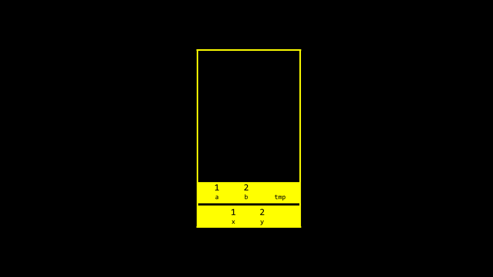

Week 4
Ponteiros. Falhas de Segmentação. Alocação Dinâmica de Memória. Stack. Heap. Estouro de buffer. E/S de arquivo. Imagens.
- Shorts
- Lab 4
- Problem Set 4
Notas
- Bem-vindo!
- Memória
- Hexadecimal
- Endereços
- Ponteiros
- Strings
- Aritmética de Ponteiros
- Comparando Strings
- Cópia
- Valgrind
- Valores Inválidos
- Diversão com Ponteiros com Binky
- Troca
- Estouro
scanf- Arquivos
- Resumindo
Bem-vindo!
- Nas semanas anteriores, falamos sobre como as imagens são compostas por blocos menores chamados pixels.
- Hoje, iremos entrar em mais detalhes sobre os zeros e uns que compõem essas imagens.
- Além disso, discutiremos como acessar os dados subjacentes armazenados na memória do computador.
Memória
-
Você pode imaginar um drama policial em que uma imagem é aprimorada, aprimorada e aprimorada, mas não é totalmente precisa para a vida real. Na verdade, se você ampliar uma imagem, verá pixels.
-
Você pode imaginar uma imagem como um mapa de bits, onde zeros representam preto e uns representam branco.
-
RGB, ou vermelho, verde, azul, são números que representam a quantidade de cada uma dessas cores. No Adobe Photoshop, você pode ver essas configurações da seguinte forma:

Observe como a quantidade de vermelho, azul e verde altera a cor selecionada.
-
Você pode ver pela imagem acima que a cor não é representada apenas em três valores. Na parte inferior da janela, há um valor especial composto por números e caracteres.
255é representado comoFF. Por que isso pode ser?
Hexadecimal
-
Hexadecimal é um sistema de contagem que possui 16 valores de contagem. Eles são os seguintes:
0 1 2 3 4 5 6 7 8 9 a b c d e fObserve que
Frepresenta15. - Hexadecimal também é conhecido como base-16.
- Ao contar em hexadecimal, cada coluna é uma potência de 16.
- O número
0é representado como00. - O número
1é representado como01. - O número
9é representado por09. - O número
10é representado como0A. - O número
15é representado como0F. - O número
16é representado como10. - O número
255é representado comoFF, porque 16 x 15 (ouF) é 240. Adicione mais 15 para fazer 255. Este é o maior número que você pode contar usando um sistema hexadecimal de dois dígitos. - Hexadecimal é útil porque pode ser representado usando menos dígitos. O hexadecimal nos permite representar informações de forma mais sucinta.
Endereços
-
Nas últimas semanas, você pode se lembrar da nossa representação artística de blocos de memória concorrentes. Aplicando numeração hexadecimal a cada um desses blocos de memória, você pode visualizá-los da seguinte forma:

-
Você pode imaginar como pode haver confusão em relação a se o bloco
10acima pode representar uma localização na memória ou o valor10. Por conseguinte, por convenção, todos os números hexadecimais são frequentemente representados com o prefixo0x, conforme a seguir:
-
Na sua janela do terminal, digite
code addresses.ce escreva o seu código da seguinte forma:#include <stdio.h> int main(void) { int n = 50; printf("%i\n", n); }Observe como
né armazenado na memória com o valor50. -
Você pode visualizar como este programa armazena este valor da seguinte forma:

-
A linguagem
Cpossui dois operadores poderosos que se relacionam com a memória:& Fornece o endereço de algo armazenado na memória. * Instrui o compilador a ir para um local na memória. -
Podemos aproveitar esse conhecimento modificando nosso código da seguinte maneira:
#include <stdio.h> int main(void) { int n = 50; printf("%p\n", &n); }Observe o uso de
%p, que nos permite visualizar o endereço de uma localização na memória.&npode ser traduzido literalmente como "o endereço den." A execução deste código retornará um endereço de memória começando com0x.
Ponteiros
- Um ponteiro é uma variável que contém o endereço de algum valor. Sucintamente, um ponteiro é um endereço na memória do seu computador.
-
Considere o seguinte código:
int n = 50; int *p = &n;Observe que
pé um ponteiro que contém um número que é o endereço de um inteiron. -
Modifique o seu código da seguinte forma:
#include <stdio.h> int main(void) { int n = 50; int *p = &n; printf("%p\n", p); }Observe que este código tem o mesmo efeito que nosso código anterior. Nós simplesmente utilizamos nosso novo conhecimento dos operadores
&e*. -
Você pode visualizar nosso código da seguinte forma:

Observe que o ponteiro parece bastante grande. De fato, um ponteiro geralmente é armazenado como um valor de 8 bytes.
-
Você pode visualizar com mais precisão um ponteiro como um endereço que aponta para outro:

-
Para ilustrar o uso do operador
*, considere o seguinte:#include <stdio.h> int main(void) { int n = 50; int *p = &n; printf("%i\n", *p); }Observe que a linha
printfimprime o inteiro localizado no endereço dep.
Strings
- Agora que temos um modelo mental para ponteiros, podemos aprofundar um nível de simplificação que foi oferecido anteriormente neste curso.
-
Lembre-se de que uma string é simplesmente um array de caracteres. Por exemplo,
string s = "HI!"pode ser representada da seguinte forma:
-
No entanto, o que é
srealmente? Onde está osarmazenado na memória? Como você pode imaginar,sprecisa ser armazenado em algum lugar. Você pode visualizar a relação descom a string da seguinte forma:
Observe como um ponteiro chamado
sinforma ao compilador onde o primeiro byte da string existe na memória. -
Modifique seu código da seguinte forma:
#include <cs50.h> #include <stdio.h> int main(void) { string s = "HI!"; printf("%p\n", s); printf("%p\n", &s[0]); printf("%p\n", &s[1]); printf("%p\n", &s[2]); printf("%p\n", &s[3]); }Observe que o código acima imprime os locais de memória de cada caractere na string
s. -
Da mesma forma, você pode modificar seu código da seguinte maneira:
#include <stdio.h> int main(void) { char *s = "HI!"; printf("%s\n", s); }Observe que este código apresentará a string que começa no local de
s.
Aritmética de ponteiros
-
Você pode modificar seu código para realizar a mesma coisa de forma mais longa, da seguinte maneira:
#include <stdio.h> int main(void) { char *s = "HI!"; printf("%c\n", s[0]); printf("%c\n", s[1]); printf("%c\n", s[2]); }Observe que estamos imprimindo cada caractere no local de
s. -
Além disso, você pode modificar seu código da seguinte maneira:
#include <stdio.h> int main(void) { char *s = "HI!"; printf("%c\n", *s); printf("%c\n", *(s + 1)); printf("%c\n", *(s + 2)); }Observe que o primeiro caractere na posição de
sé impresso. Em seguida, o caractere na posiçãos + 1é impresso, e assim por diante. -
Você consegue imaginar o que aconteceria se você tentasse acessar algo na localização
s + 50? Hackers às vezes tentam ganhar acesso a itens na memória aos quais não deveriam ter acesso. Se você tentar isso, o programa provavelmente sairá como uma precaução de segurança.
Comparando Strings
- Uma string de caracteres é simplesmente uma matriz de caracteres identificada pelo seu primeiro byte.
- Lembre-se de que na semana passada propusemos que não podemos comparar duas strings usando o operador
==. - Utilizar o operador
==na tentativa de comparar strings tentará comparar as localizações de memória das strings em vez dos caracteres contidos nelas. Por isso, recomendamos o uso destrcmp. -
Para ilustrar isso, digite
code compare.ce escreva o código a seguir:#include <cs50.h> #include <stdio.h> int main(void) { // Get two strings char *s = get_string("s: "); char *t = get_string("t: "); // Compare strings' addresses if (s == t) { printf("Same\n"); } else { printf("Different\n"); } }Perceba que digitar
OI!para ambas as strings ainda resulta na saída deDiferente. -
Por que essas strings aparentemente são diferentes? Você pode usar o seguinte para visualizar:

-
Para maior clareza, você pode ver como a seguinte imagem ilustra ponteiros apontando para dois locais separados na memória:
-
Modifique seu código da seguinte maneira:
#include <cs50.h> #include <stdio.h> int main(void) { // Get two strings char *s = get_string("s: "); char *t = get_string("t: "); // Print strings printf("%s\n", s); printf("%s\n", t); }Observe como agora temos duas strings separadas armazenadas provavelmente em dois locais distintos.
-
Você pode ver as localizações dessas duas strings armazenadas com uma pequena modificação:
#include <cs50.h> #include <stdio.h> int main(void) { // Get two strings char *s = get_string("s: "); char *t = get_string("t: "); // Print strings' addresses printf("%p\n", s); printf("%p\n", t); }Observe que o
%sfoi alterado para%pna instrução de impressão.
Cópia
- Uma necessidade comum na programação é copiar uma string para outra.
-
Na janela do seu terminal, digite
code copy.ce escreva o código a seguir:#include <cs50.h> #include <ctype.h> #include <stdio.h> #include <string.h> int main(void) { // Get a string string s = get_string("s: "); // Copy string's address string t = s; // Capitalize first letter in string t[0] = toupper(t[0]); // Print string twice printf("s: %s\n", s); printf("t: %s\n", t); }Observe que
string t = scopia o endereço desparat. Isso não alcança o que estamos desejando. A string não é copiada - apenas o endereço é. -
Antes de abordarmos esse desafio, é importante garantir que não experimentemos uma violação de segmento por meio de nosso código, onde tentamos copiar
string sparastring t, ondestring tnão existe. Podemos utilizar a funçãostrlenda seguinte forma para ajudar com isso:#include <cs50.h> #include <ctype.h> #include <stdio.h> #include <string.h> int main(void) { // Get a string string s = get_string("s: "); // Copy string's address string t = s; // Capitalize first letter in string if (strlen(t) > 0) { t[0] = toupper(t[0]); } // Print string twice printf("s: %s\n", s); printf("t: %s\n", t); }Observe que
strlené usado para garantir que astring texista. Se ela não existir, nada será copiado. -
Você pode visualizar o código acima da seguinte forma:

Observe que
setainda estão apontando para os mesmos blocos de memória. Esta não é uma cópia autêntica de uma string. Em vez disso, esses são dois ponteiros apontando para a mesma string. -
Para ser capaz de fazer uma cópia autêntica da string, precisaremos introduzir dois novos blocos de construção. Primeiro,
mallocpermite que você, o programador, aloque um bloco de um tamanho específico de memória. Em segundo lugar,freepermite que você informe ao compilador para liberar aquele bloco de memória que você alocou anteriormente. -
Podemos modificar nosso código para criar uma cópia autêntica de nossa string da seguinte forma:
#include <cs50.h> #include <ctype.h> #include <stdio.h> #include <stdlib.h> #include <string.h> int main(void) { // Get a string char *s = get_string("s: "); // Allocate memory for another string char *t = malloc(strlen(s) + 1); // Copy string into memory, including '\0' for (int i = 0; i <= strlen(s); i++) { t[i] = s[i]; } // Capitalize copy t[0] = toupper(t[0]); // Print strings printf("s: %s\n", s); printf("t: %s\n", t); }Observe que
malloc(strlen(s) + 1)cria um bloco de memória que tem o comprimento da stringsmais um. Isso permite a inclusão do caractere null\0em nossa string final copiada. Então, o loopforpercorre a stringse atribui cada valor a esse mesmo local na stringt. -
Descobriu-se que há uma ineficiência em nosso código. Modifique seu código da seguinte forma:
#include <cs50.h> #include <ctype.h> #include <stdio.h> #include <stdlib.h> #include <string.h> int main(void) { // Get a string char *s = get_string("s: "); // Allocate memory for another string char *t = malloc(strlen(s) + 1); // Copy string into memory, including '\0' for (int i = 0, n = strlen(s); i <= n; i++) { t[i] = s[i]; } // Capitalize copy t[0] = toupper(t[0]); // Print strings printf("s: %s\n", s); printf("t: %s\n", t); }Observe que
n = strlen(s)agora é definido no lado esquerdo doloop for. É melhor não chamar funções desnecessárias na condição intermediária dofor, pois isso fará com que seja executada repetidamente. Ao movern = strlen(s)para o lado esquerdo, a funçãostrlensó é executada uma vez. -
A linguagem
Cpossui uma função integrada para copiar strings chamadastrcpy. Ela pode ser implementada da seguinte forma:#include <cs50.h> #include <ctype.h> #include <stdio.h> #include <stdlib.h> #include <string.h> int main(void) { // Get a string char *s = get_string("s: "); // Allocate memory for another string char *t = malloc(strlen(s) + 1); // Copy string into memory strcpy(t, s); // Capitalize copy t[0] = toupper(t[0]); // Print strings printf("s: %s\n", s); printf("t: %s\n", t); }Observe que
strcpyfaz o mesmo trabalho que nosso laçoforanteriormente fazia. -
Ambas as funções
get_stringemallocretornamNULL, um valor especial na memória, no caso de algo dar errado. Você pode escrever um código que possa verificar essa condiçãoNULLda seguinte forma:#include <cs50.h> #include <ctype.h> #include <stdio.h> #include <stdlib.h> #include <string.h> int main(void) { // Get a string char *s = get_string("s: "); if (s == NULL) { return 1; } // Allocate memory for another string char *t = malloc(strlen(s) + 1); if (t == NULL) { return 1; } // Copy string into memory strcpy(t, s); // Capitalize copy if (strlen(t) > 0) { t[0] = toupper(t[0]); } // Print strings printf("s: %s\n", s); printf("t: %s\n", t); // Free memory free(t); return 0; }Observe que, se a string obtida tiver comprimento
0ou se a alocação de memória falhar,NULLé retornado. Além disso, observe quefreeinforma ao computador que você terminou de usar esse bloco de memória criado viamalloc.
Valgrind
- Valgrind é uma ferramenta que pode verificar se há problemas relacionados à memória em seus programas em que você utilizou
malloc. Especificamente, ela verifica se vocêfreetodo o espaço de memória que você alocou. -
Considere o seguinte código:
#include <stdio.h> #include <stdlib.h> int main(void) { int *x = malloc(3 * sizeof(int)); x[1] = 72; x[2] = 73; x[3] = 33; }Observe que a execução deste programa não causa erros. Embora o
mallocseja usado para alocar memória suficiente para um array, o código falha em liberar essa memória alocada usando ofree. - Se você digitar
make memoryseguido devalgrind ./memory, você receberá um relatório do valgrind que indicará onde a memória foi perdida como resultado do seu programa. -
Você pode modificar o seu código da seguinte forma:
#include <stdio.h> #include <stdlib.h> int main(void) { int *x = malloc(3 * sizeof(int)); x[1] = 72; x[2] = 73; x[3] = 33; free(x); }Observe que executar o valgrind novamente agora resulta em nenhum vazamento de memória.
Valores de Lixo
- Quando você solicita ao compilador um bloco de memória, não há garantia de que essa memória estará vazia.
-
É muito possível que essa memória que você alocou tenha sido utilizada anteriormente pelo computador. Consequentemente, você pode ver valores de lixo ou valores indesejados. Isso ocorre porque você está recebendo um bloco de memória, mas não o está inicializando. Por exemplo, considere o seguinte código:
#include <stdio.h> #include <stdlib.h> int main(void) { int scores[1024]; for (int i = 0; i < 1024; i++) { printf("%i\n", scores[i]); } }Observe que a execução deste código alocará
1024locais na memória para o seu array, mas o loopforprovavelmente mostrará que nem todos os valores dentro dele são0. É sempre uma boa prática estar ciente da possibilidade de valores não inicializados quando você não inicializa blocos de memória com algum outro valor como zero ou outra coisa.
Diversão com Ponteiro com Binky
- Assistimos a um vídeo da Universidade de Stanford que nos ajudou a visualizar e entender ponteiros.
Trocar
-
No mundo real, uma necessidade comum na programação é trocar dois valores. Naturalmente, é difícil trocar duas variáveis sem um espaço temporário de armazenamento. Na prática, você pode digitar
code swap.ce escrever o código a seguir para ver isso em ação:#include <stdio.h> void swap(int a, int b); int main(void) { int x = 1; int y = 2; printf("x is %i, y is %i\n", x, y); swap(x, y); printf("x is %i, y is %i\n", x, y); } void swap(int a, int b) { int tmp = a; a = b; b = tmp; }Observe que, embora este código seja executado, ele não funciona. Os valores, mesmo depois de enviados para a função
swap, não são trocados. Por quê? -
Quando você passa valores para uma função, está fornecendo apenas cópias. Nas semanas anteriores, discutimos o conceito de escopo. Os valores de
xeycriados nas chaves de{}da funçãomaintêm apenas o escopo da funçãomain. Considere a seguinte imagem:
Observe que as variáveis globais, que não usamos neste curso, vivem em um lugar na memória. Várias funções são armazenadas na
pilhaem outra área da memória. -
Agora, considere a seguinte imagem:

Observe que
maineswaptêm dois quadros ou áreas de memória separadas. Portanto, não podemos simplesmente passar os valores de uma função para outra para alterá-los. -
Modifique seu código da seguinte forma:
#include <stdio.h> void swap(int *a, int *b); int main(void) { int x = 1; int y = 2; printf("x is %i, y is %i\n", x, y); swap(&x, &y); printf("x is %i, y is %i\n", x, y); } void swap(int *a, int *b) { int tmp = *a; *a = *b; *b = tmp; }Observe que as variáveis não são passadas por valor, mas por referência. Ou seja, os endereços de
aebsão fornecidos à função. Portanto, a funçãoswappode saber onde fazer alterações nos valores reais deaebda função principal. -
Você pode visualizar isso da seguinte forma:

Estouro
- Um estouro de heap ocorre quando você ultrapassa o limite da heap e acessa áreas de memória que não deveria.
- Um estouro de pilha ocorre quando há muitas funções sendo chamadas, ultrapassando a quantidade de memória disponível.
- Ambos são considerados estouros de buffer.
scanf
- No CS50, criamos funções como
get_intpara simplificar a obtenção de entrada do usuário. scanfé uma função incorporada que pode obter a entrada do usuário.-
Podemos reimplementar
get_intfacilmente usandoscanfda seguinte maneira:#include <stdio.h> int main(void) { int x; printf("x: "); scanf("%i", &x); printf("x: %i\n", x); }Observe que o valor de
xé armazenado no local dexna linhascanf("%i", &x). -
No entanto, tentar reimplementar a função
get_stringnão é fácil. Considere o seguinte:#include <stdio.h> int main(void) { char *s; printf("s: "); scanf("%s", s); printf("s: %s\n", s); }Observe que nenhum
&é necessário porque strings são especiais. Ainda assim, este programa não funcionará. Em nenhum lugar deste programa alocamos a quantidade de memória necessária para a nossa string. -
Podemos modificar nosso código da seguinte forma:
#include <stdio.h> int main(void) { char s[4]; printf("s: "); scanf("%s", s); printf("s: %s\n", s); }Observe que se pré-alocarmos um array de tamanho
4, podemos digitarcate o programa funcionará. No entanto, uma string maior que isso criaria um erro.
Arquivos
-
Você pode ler e manipular arquivos. Embora este tópico seja discutido mais a fundo em uma semana futura, considere o seguinte código para
phonebook.c:#include <cs50.h> #include <stdio.h> #include <string.h> int main(void) { // Open CSV file FILE *file = fopen("phonebook.csv", "a"); // Get name and number char *name = get_string("Name: "); char *number = get_string("Number: "); // Print to file fprintf(file, "%s,%s\n", name, number); // Close file fclose(file); }Observe que este código usa ponteiros para acessar o arquivo.
-
Você pode criar um arquivo chamado
phonebook.csvantes de executar o código acima. Após executar o programa acima e inserir um nome e número de telefone, você notará que esses dados persistem no seu arquivo CSV.
Resumindo
Nesta lição, você aprendeu sobre ponteiros que fornecem a capacidade de acessar e manipular dados em locais de memória específicos. Especificamente, mergulhamos em...
- Memória
- Hexadecimal
- Endereços
- Ponteiros
- Strings
- Aritmética de ponteiros
- Comparação de strings
- Cópia
- Valgrind
- Valores de lixo
- Troca
- Estouro
scanf
Até a próxima!